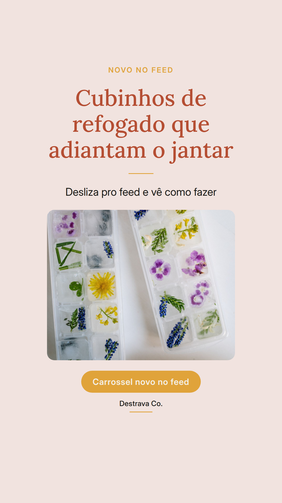
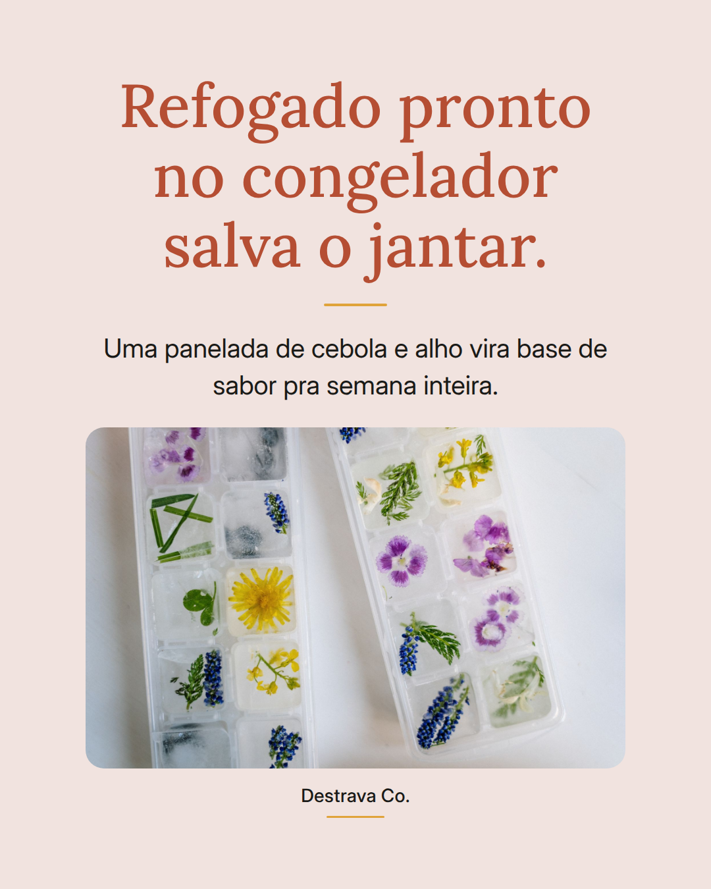
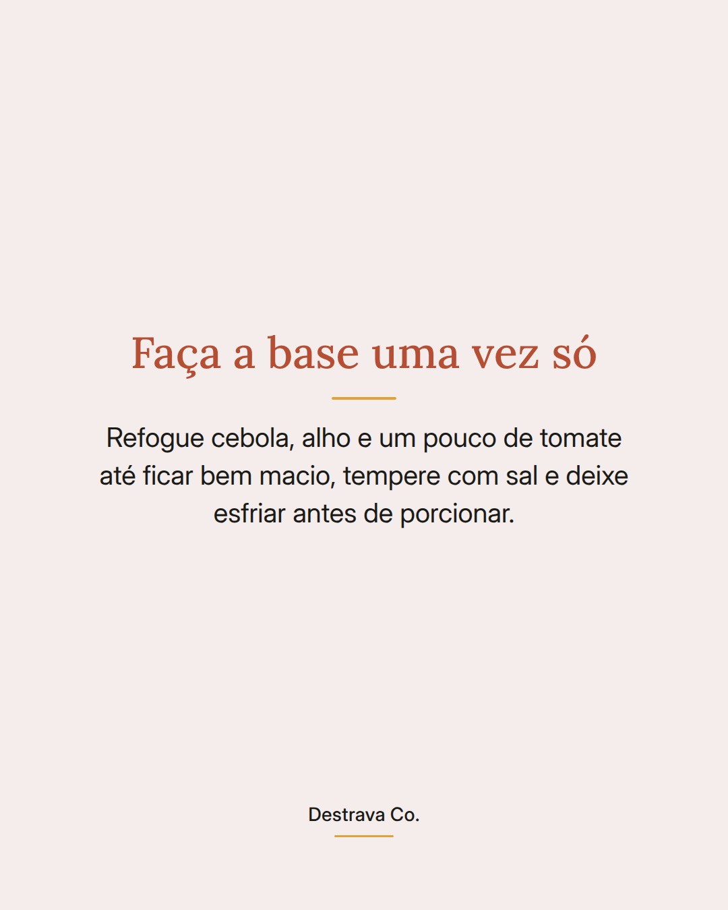
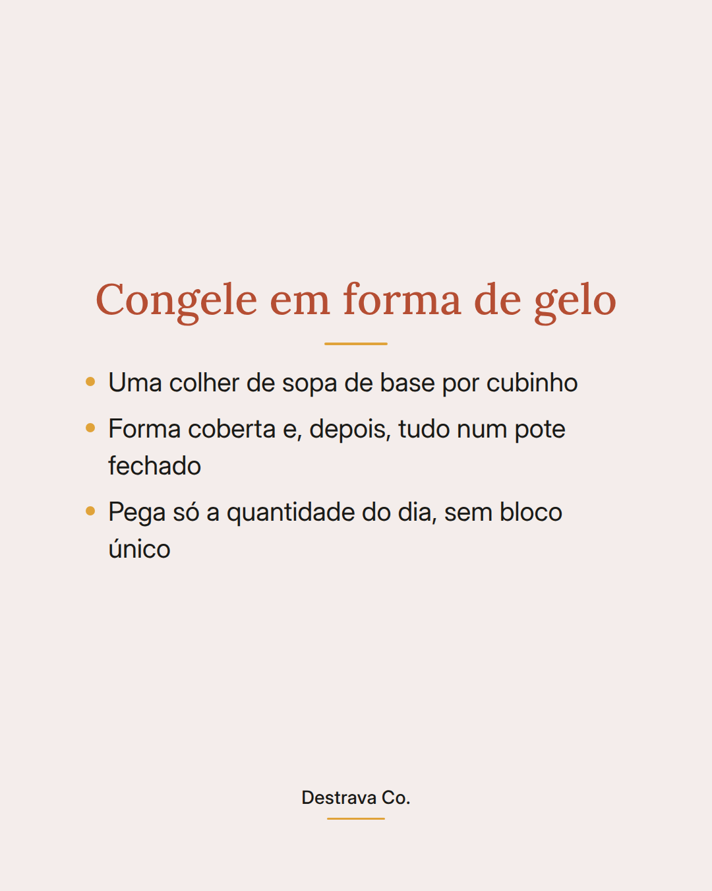
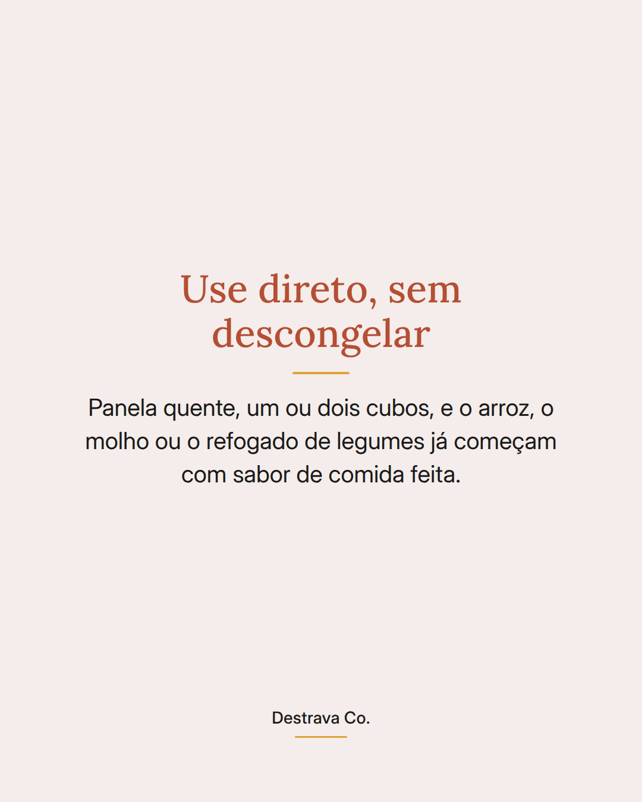

Refogado pronto no congelador é o atalho mais barato que existe pra quem cozinha com pressa.
Cebola, alho e tomate refogados uma vez só viram base de sabor pra semana inteira.
Funciona assim: você refoga uma panela cheia, deixa esfriar, divide em forma de gelo e leva ao congelador. No dia seguinte, desenforma os cubinhos e guarda num pote fechado.
Na hora do jantar, a panela esquenta, um cubo vai direto do congelador pra ela e o arroz, o molho de tomate ou os legumes já começam temperados. Sem picar nada, sem chorar em cima da tábua num dia cansado.
Se a semana apertar, dois cubos e uma lata de grão de bico já são um prato quente.
Salva esse post pra fazer no próximo fim de semana e manda pra alguém que vive dizendo que não tem tempo de cozinhar. Se quiser mais ideias de jantar rápido, o PDF com 20 receitas de até 15 minutos é gratuito.